superyouziskills
把 15 套公开名家框架、28 位深研评委和 10 维度实时数据，装进你的 AI 助手。
完整功能免费开放。每个数字标注出处，每条结论带证伪条件。
CC BY-NC-SA 4.0 · 非商业共享 · AI 平台费用由所用服务决定
00 · 样报
三种报告，全程有据可依
市场情绪 · 个股复盘 · 深度体检——数字有来源，结论有证伪条件，分析可复算。用下方标签切换类型，点击样报在新标签打开完整报告。
01 · 数据引擎
10 个维度，本地脚本自动取数
依赖权威数据源（akshare · 腾讯财经 · 东方财富），无需额外订阅行情。取不到就明说「数据缺失」，不编数字，不猜测。
-
全市场情绪面板panel
任何分析开始前先拉。涨跌停比、情绪温度计、涨停池分布、炸板率、人气板块前排——判断今天整体能不能做。
-
实时报价quote
个股价格、涨跌幅、换手率、成交额、振幅、量比。所有框架分析的起点数字，每个字段标注数据来源。
-
K 线结构kline
最近 120 日 K 线 + AI 结构摘要（均线位置、关键高低点、形态判断）。帮框架判断标的当前处于什么走势阶段。
-
龙虎榜lhb
近 5 日龙虎榜席位明细——游资营业部、机构专用席位、净买入净卖出金额。识别主力动向与筹码归属。
-
资金流向flow
大单、超大单、主力净流入金额与占比，历史 5/10/20 日累计。看钱在进还是在出。
-
情绪评分sentiment
个股人气排名、涨停池是否在列、连板天数、封单量。情绪框架路由的核心输入字段。
-
基本面概况fund
总市值、自由流通市值、PE/PB（TTM）、ROE、毛利率。判断标的体量档次和基本面质地。
-
历史财务finhist
五年营收、净利润、自由现金流及同比增速。深研 DCF 估值的数据基础，全程显示假设，可复算。
-
估值历史分位val
PE/PB 当前值 vs. 历史 3/5/10 年百分位。帮评审团判断现在贵不贵、与历史区间的关系。
-
股东结构holders
最新前十大股东、机构持仓变动、基金重仓比例。深研必看的筹码结构与聪明钱动向。
02 · 蒸馏来源
蒸馏了谁，来源是什么
每个框架都有明确的一手来源。不是 AI 凭空生成——是逐条采集原始语录，标注来源平台和帖子编号，交叉校验后蒸馏成结构化判断链。
-
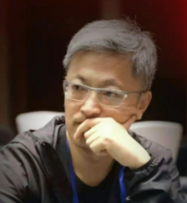
炒股养家A 股情绪周期理论奠基人。2010 年《我如何在股市赚了 200 万》一手原帖，国内短线框架的思想源头。 -
Asking（养家问法）养家自述的悟道启蒙者，「合力 / 大势」思想提出者，情绪周期框架直接师承于此。
-
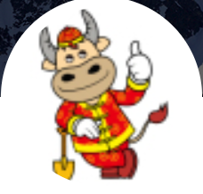
92kobe1992 年生，2020 年淘股吧实盘赛季军，自述 500 万做到 2300 万+，发展出独立的相位切换判断。 -
赵老哥连板打板方法论最广传播者，自述「八年一万倍」。框架只取其连板逻辑，不采用杠杆相关表述。
-
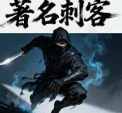
刺客《刺客实盘》236 万阅读，2014 年转型超短、2018 年自述破亿，龙虎榜战役有媒体跟踪记录。 -
聂盘95 后游资，2016 年起公开实盘直播 1485 天，专注极端恐慌下的超跌反转。
-
章盟主（章蟒珠）趋势大票游资，极少受访。三份监管文件（证监会〔2024〕51 号等）为 A 级一手来源。
-
陈小群「亢奋顶 / 猥琐底」信号理论。含重大争议（每经 2026-01-25），框架已在失效信号节注明。低样本警告 · 含重大争议
03 · 框架解剖
每个框架 7 层结构，不是提示词，是判断链
普通 AI 提示词是一段描述。这里的每个框架有 7 层结构，每层都有具体约束——包括什么情况下框架无效，这是大多数工具不敢写的一层。
-
①
适用场景 什么类型的问题才触发这个框架，什么情况下不适用。明确边界，防止在不适配的情形下套用。
-
②
核心信条 该人物的底层投资哲学，带「」原话引用和来源编号（如 A-01·淘股吧一手原帖）。AI 解读必须从这些信条出发，不得凭空延伸。 成交量，主要是看成交量的变化。除了成交量，基本什么指标都不看。——炒股养家 A-01
-
③
判断链 分步推理流程，每步映射到具体数据字段名（如
panel.zt_summary.zt_count）。AI 取数后逐步对照，推导过程显式呈现，不跳步骤。 -
④
关键信号 列出与数据脚本字段的对应关系，含数值阈值（如涨停家数 > 80 偏热 / < 40 偏冷）。每个信号都可以拿真实数据来验证。
-
⑤
操作纪律 进出场规则，具体到仓位比例范围和触发条件。不是模糊建议，是有操作标准的规则集。
-
⑥
失效信号 什么情况下本框架的逻辑不成立，必须停用。这是大多数分析工具故意省略的一层——给出失效条件，意味着承认框架有边界。
-
⑦
一句话口令 快捷触发词。如「用赵老哥的框架看 600519」「让冯柳评一下这只票」——直接点名，跳过路由，单独输出该框架的判断。
04 · 框架矩阵
15 套交易框架 + 1 套风险框架
按问题类型自动路由，只调用对应框架的完整「判断链 + 关键信号 + 失效条件」，不混用视角，不全量输出。
05 · 深研评审团
28 位评委 · 9 大流派 · 同一只股票
深度体检时启动评审团。每位评委按自己的打分 rubric 对真实数据逐维评分（0–100），给出符合其投资哲学的口吻点评。流派间分歧原样呈现，不可调和的矛盾不会被抹平。
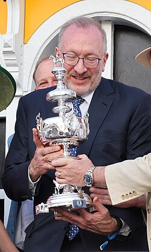
卡拉曼A·价值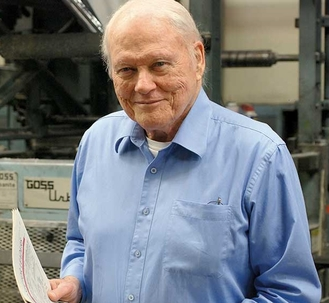
欧奈尔B·成长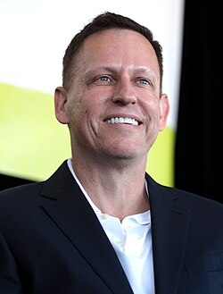
彼得·蒂尔B·成长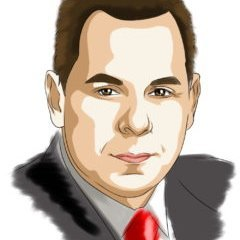
米涅尔维尼D·动量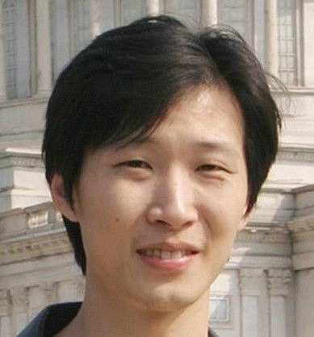
冯柳E·中国价投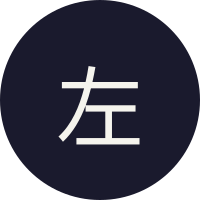
左手新一F·游资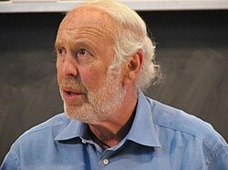
西蒙斯G·量化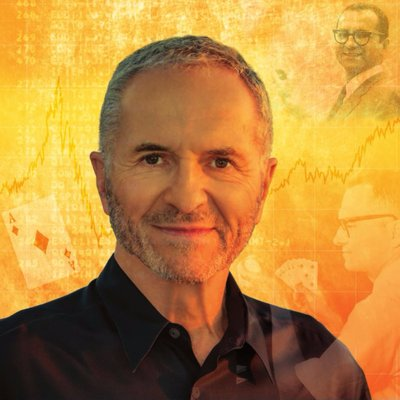
爱德华·索普G·量化 马斯克H·科技
马斯克H·科技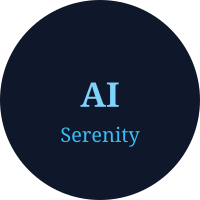
SerenityI·AI 卡位06 · 安装
从 GitHub 下载，装进你的 AI 助手
需要支持本地 Skill 的 AI 助手，以及 Python 3.9+ 和网络连接。默认安装到 Claude Code 的技能目录；其他助手可按各自规则指定目录。
# macOS / Linux：在终端执行 git clone https://github.com/leslieyeo/superyouziskills.git cd superyouziskills bash installer/install.sh # Windows：下载源码 ZIP 并完整解压，运行 installer/install.bat # 安装后新开 AI 会话，直接提问 → 「今天市场情绪怎么样，短线能做吗？」 → 「分析一下 600519」 → 「600519 值不值得长期持有？」
升级会替换安装目录中的旧文件，自定义修改请先备份。详细说明见 项目 README ↗。
07 · 共享
看得见方法，也改得动工具
框架、评分规则、数据脚本和报告模板都在仓库里。你可以检查分析依据，也可以按自己的研究习惯调整。
- ①完整功能，免费使用15 套交易框架、1 套风险框架与 28 位评审档案全部开放，无需激活码。
- ②更新记录，公开可查每次代码和文档修改都有记录。遇到接口失效或数据缺失，可以查看已有问题或提交反馈。
- ③保留来源，也保留局限人物框架注明资料出处、转引与存疑部分；评分和阈值属于项目整理的方法，不代表本人背书。
- ④按自己的习惯调整修改报告样式、补充数据源或完善框架。原创代码与文档采用 CC BY-NC-SA 4.0，仅限非商业用途；分享改编内容须保留署名并遵循相同方式共享，第三方字体与引用遵循各自授权。
08 · 免费获取
一套完整工具，现在就能开始
源码、安装脚本、使用指南和提问模板，一起开放。
本项目按 CC BY-NC-SA 4.0 提供，仅限非商业用途。需要自备 AI 助手；模型服务和第三方数据源的费用、使用规则以各平台为准。
09 · 常见问题
开始前，你可能想知道
- 需要哪些前提条件？
- 需要支持本地 Skill 的 AI 助手，数据脚本需要 Python 3.9+ 和网络连接。不同助手的安装目录与执行权限不同，请按项目 README 和所用助手的说明配置。
- 真的免费吗？还需要激活吗？
- 项目源码公开，采用 CC BY-NC-SA 4.0，允许非商业使用与按协议分享。你使用的 AI 助手或模型服务可能另行收费；本项目不提供模型额度。
- 手机能用吗？
- 取决于所用 AI 助手是否支持手机远程接入。远程连接电脑时，脚本仍由电脑运行；无法执行脚本的环境需要助手具备联网搜索能力，缺失数据按规则降级处理。
- 数据准不准？数据来源是什么？
- 数据来自 akshare、腾讯财经、东方财富等权威接口，每个字段标注来源。取不到时明说「数据缺失」，相关结论降级为「依据不足」。本工具不编数字，所有数字用户可自行核实。
- 28 位评委的分数从哪里来，能核实吗？
- 每位评委有独立的评分 rubric（存放于
jury/档案）。AI 读取档案后按 rubric × 真实数据字段逐维打分，推导过程在报告中完整呈现，可以逐项验算。数据维度缺失时该维度权重归零并注明，禁止凭印象给分。 - 覆盖哪些市场和品种？
- 只覆盖 A 股。港美股、基金、可转债、期货明确不在能力圈内，工具会在回答中如实说明。专注做好 A 股短线和价值研究这一件事。
- 这是荐股工具吗？能告诉我买什么吗？
- 不是。这是研究框架与复盘工具——提供方法、数据和证伪条件，不替用户做决定，不直接说「买哪只」。用户要求「直接告诉我买什么」时，工具给出筛选框架和自查清单，决策由用户独立作出。
遇到问题，先查 安装说明，或在 GitHub Issues 提交反馈。